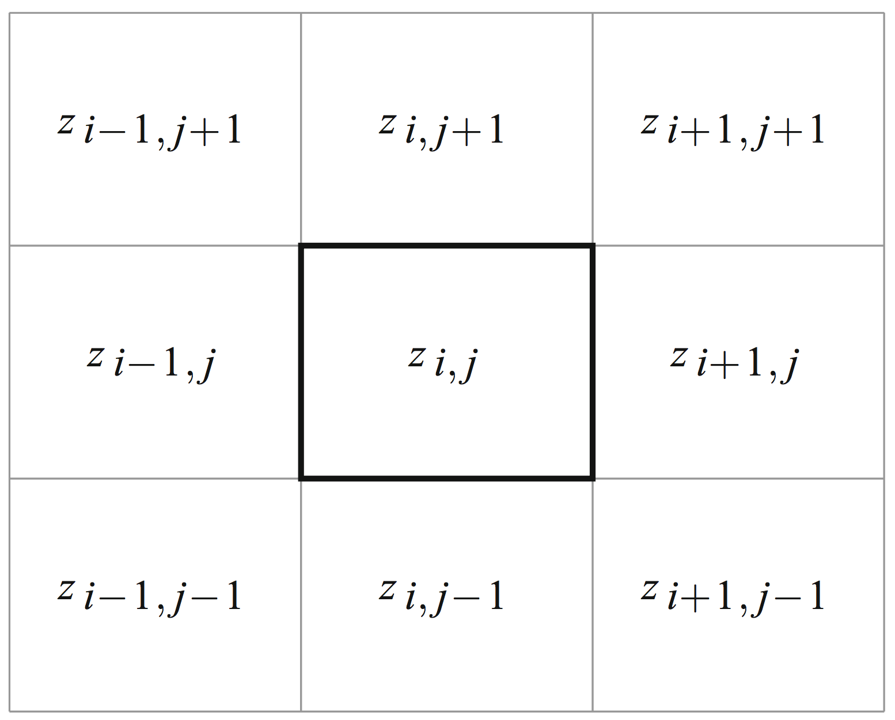
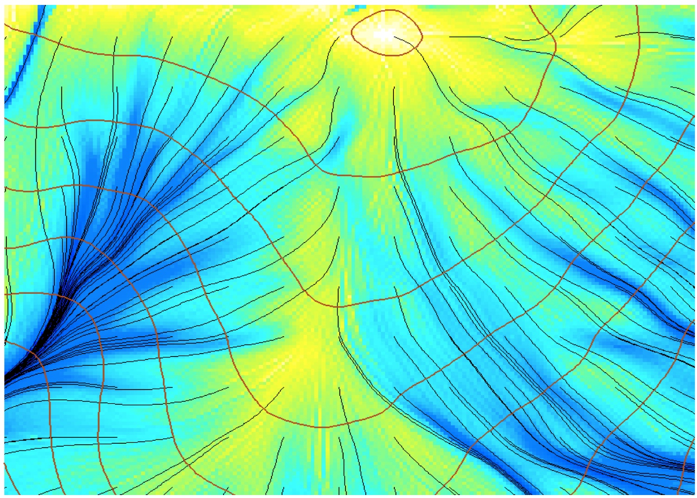
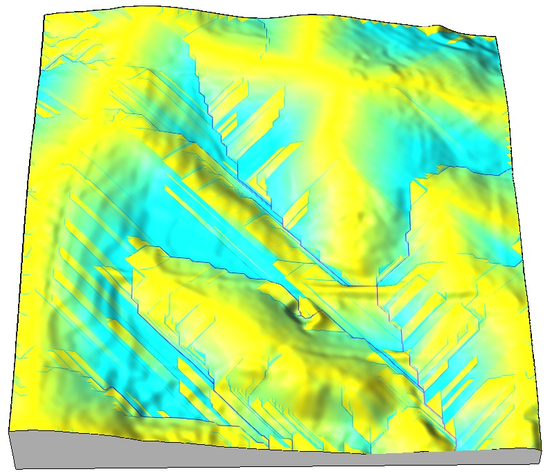
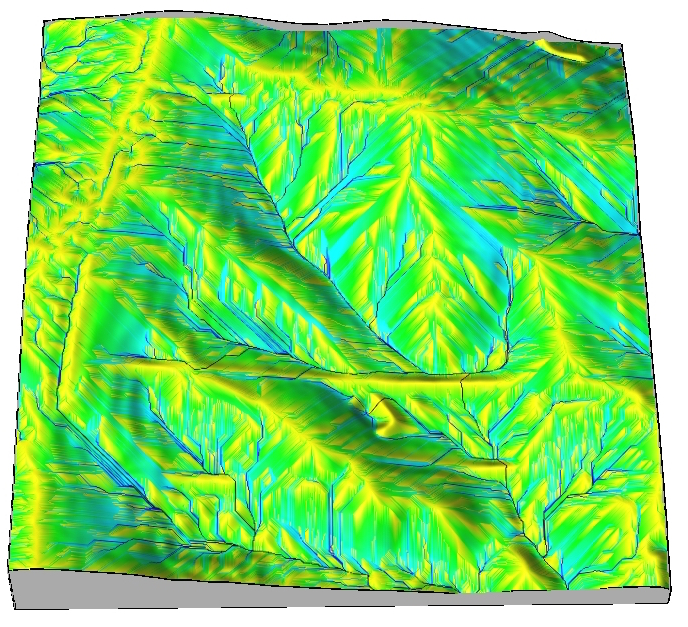
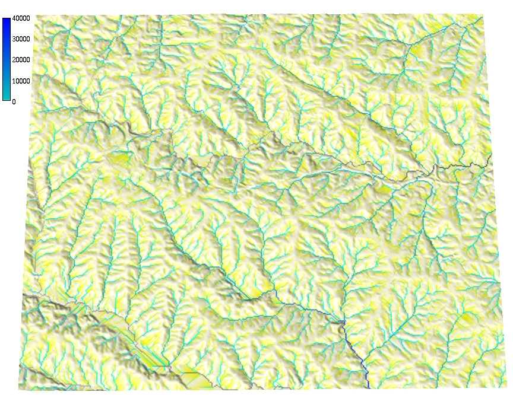
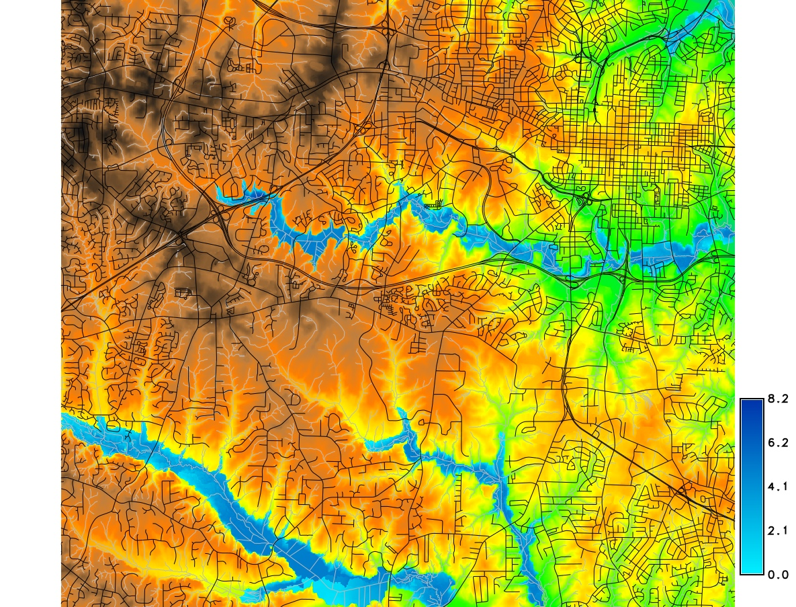
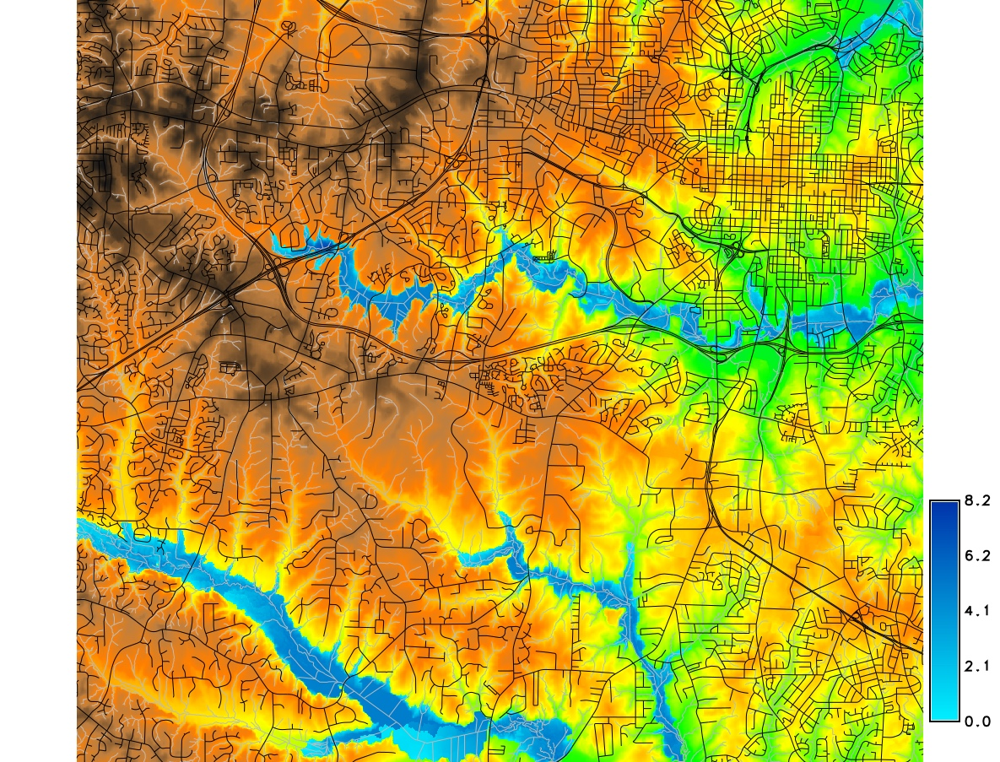

Process-based diffusion and flow simulation
Helena Mitasova, Anna Petrasova, Vaclav Petras
Learning objectives
- diffusion process modeling
- diffusion equation and its solutions
- shallow water flow equation
- numerical methods for solving SWFE
- implementation
- applications
Diffusion and flow processes
- where we see diffusion in nature
- where we see flow
diffusion and flow images or animations

Diffusion equation, analytical solution
note that the direction of flow is minus $\nabla f$, because gradient vector points upslope
Diffusion: numerical modeling
- $- \nabla f$ is a vector in the steepest slope direction (aspect),
its magnitude is slope steepness (rise over run).
- slope $\beta$ and aspect $\alpha$:
$$\beta^\circ = {\arctan}\sqrt{f_x^2+f_y^2} \qquad \beta\%=100 \sqrt{f_x^2+f_y^2}$$
$$\alpha^\circ = {\arccos} \left( -f_y \over \sqrt{f_x^2+f_y^2} \right) $$
- we can compute gradient using slope and aspect angle
$$ f_x = \tan \beta . \cos \alpha, \qquad f_y = \tan \beta . \sin \alpha$$
recall that
$$(f_x, f_y) = \left( {\partial f \over \partial x}, {\partial f \over \partial y} \right), \; z = f(x,y)$$
Diffusion example
- D8: $\Delta z_{max}$ in 3x3 window:
discrete directions 0,45, deg
- Dinf: partial derivatives of a suitable approximation function, such as spline or polynomial
Fitting the polynomial bellow to the 9 grid points of 3x3 window
using weighted least squares leads to simple equations for estimating $f_x, f_y$:
$$z(x,y)=a_0+a_1 x + a_2 y + a_3 xy + a_4 x^2 + a_5 y^2$$
$$f_x={{(z_{i-1,j-1}-z_{i+1,j-1})+2(z_{i-1,j}-z_{i+1,j})+(z_{i-1,j+1}-z_{i+1,j+1})} \over {8\Delta x}}$$
$$f_y={{(z_{i-1,j-1}-z_{i-1,j+1})+2(z_{i,j-1}-z_{i,j+1})+(z_{i+1,j-1}-z_{i+1,j+1})} \over {8\Delta y}}$$

Shallow water flow equation
SWF equation
note that the direction of flow is minus $\nabla f$, because gradient vector points upslope
SWF numerical methods
- finite differenc, finite element
- finite volume
- QMC path sampling
images illsutrating approaches


Duality of particles and fields
Flowlines and flow accumulation

Single flow direction routing
- SFD Single flow direction - moves entire unit of flow into a single downslope cell in the gradient direction
- Discrete D8 and continuous Dinf gradient direction


when D8 is sufficient? SFD over noisy surface mitigates the D8 artifact
Green's function solution
MFD multiple flow direction partitions flow into two or more downslope directions


Implementation and parallelization
Simulation of spatialy variable source areas


Applications
- What is gradient in flat area? In depressions?
- Many algorithms were developed for routing through flat areas and depressions
- Hydrological flattening, enforcement, conditioning
- New (and some old) algorithms do not require depression filled DEM

Finite volume solution
- elevation threshold - bathtub model
- spread of water from source - friction gradient rather than elevation gradient
- hydrologically connected surface water level
- HAND: height above the nearest drainage technique
- interpolation between pre-computed flood levels along the source stream section(FIMAN)
Flooding - bathtub model

Flooding - lake model
- Creates hydrologically connected area (lake) from a given point at a given elevation
- Valid for small flat areas with point source, approximates steady state, uniform flooding


water level at 90m asl
Flooding - lake model
- Simplified storm surge - series of lake models
- Neglects time and water mass: worst case scenario

Flooding - inundation (spread) model
- Channel has variable elevation: Height Above Nearest Drainage methodology
- Using flow direction, compute raster where each cell is $\Delta z$ between the given cell
and the the cell on the stream into which the cell drains.
 
